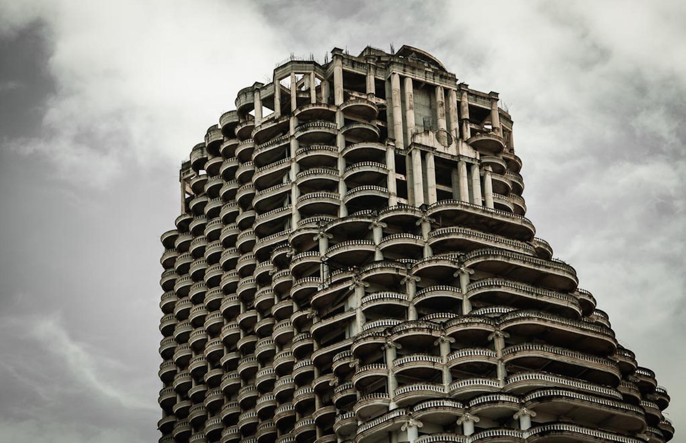
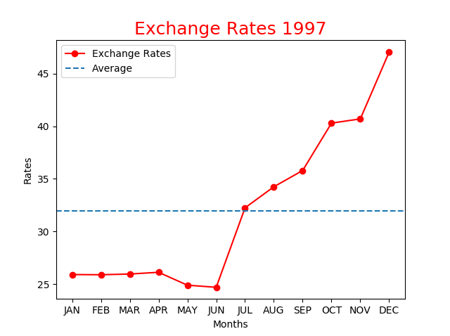
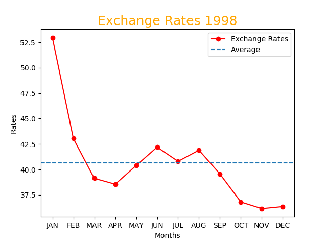

วิกฤตต้มยำกุ้ง

--------------------------------------------------------------
วิกฤตการณ์การเงินในเอเชียช่วง พ.ศ.2540 / ค.ศ.1997 หรือเรียกทั่วไปในประเทศไทยว่า “วิกฤตต้มยำกุ้ง”เป็นช่วงวิกฤตการณ์ทางการเงินซึ่งส่งผลกระทบถึงหลายประเทศในทวีปเอเชียเริ่มตั้งแต่เดือนกรกฎาคม พ.ศ. 2540 ก่อให้เกิดความกลัวว่าจะเกิดการล่มสลายทางเศรษฐกิจทั่วโลกเนื่องจากการแพร่ระบาดทางการเงิน
วิกฤตดังกล่าวเริ่มขึ้นในประเทศไทย เมื่อค่าเงินบาทลดลงอย่างมากอันเกิดจากการตัดสินใจของรัฐบาลไทย ซึ่งมี พลเอกชวลิต ยงใจยุทธ เป็นนายกรัฐมนตรี ที่ลอยตัวค่าเงินบาท ตัดการอิงเงินสกุลดอลลาร์สหรัฐ หลังจากความพยายามทั้งหมดที่จะสนับสนุนค่าเงินบาทเมื่อเผชิญกับการแผ่ขยายแบบเกินเลยทางการเงิน
(Financial Overextension) อย่างรุนแรง โดยเฉพาะอย่างยิ่งส่วนขับเคลื่อนอสังหาริมทรัพย์ ในเวลานั้น ประเทศไทยมีภาระหนี้สาธารณะซึ่งทำให้ประเทศอยู่ในสภาพล้มละลายก่อนหน้าการล่มสลายของค่าเงิน และเมื่อวิกฤตดังกล่าวขยายออกนอกประเทศ ค่าเงินของประเทศส่วนใหญ่ในเอเชียตะวันออกเฉียงใต้และญี่ปุ่นก็ได้ทรุดตัวลงเช่นกัน ตลาดหลักทรัพย์ปรับตัวลดลงและรวมไปถึงราคาสินทรัพย์อื่นๆ และทำให้หนี้เอกชนเพิ่มสูงขึ้น

จากกราฟเราจะเห็นได้ชัดเลยว่าค่าเงินบาทไทย ต่ำมาตลอดตั้งแต่ช่วงต้นปี จนกระทั่งเดือนมิถุนายนค่าเงินกระโดดสูงขึ้นเรื่อยๆ จนถึงสิ้นปี

จากที่ค่าเงินมีการไต่ระดับขึ้นสูงมากจากปีที่แล้ว พอต้นปี ก็ดิ่งลงเหวอย่างน่าตกใจ แม้มีช่วงเดือนเมษายน ถึง สิงหาคม ที่ฟื้นขึ้นมาเล็กน้อย แต่หลังจากนั้น ค่าเงินก็เริ่มลดลง
ผลกระทบจากวิกฤตต้มยำกุ้ง
- สัดส่วนระหว่างหนี้ต่างประเทศกับ GDP เพิ่มสูงขึ้นมาก เช่น ประเทศในอาเซียนเพิ่มจาก100%กลายเป็น180%ในช่วงที่เลวร้ายที่สุดของวิกฤติการณ์
- กองทุนการเงินระหว่างประเทศ (IMF) เข้ามารักษาเสถียรภาพสกุลเงินของ ประเทศอินโดนีเซีย ไทย และเกาหลีใต้ โดยการลงทุน 40,000 ล้านดอลลาร์สหรัฐ เพราะ 3 ประเทศดังกล่าวได้รับผลกระทบมากที่สุด
- เกิดภาวะเศรษฐกิจตกต่ำครั้งใหญ่ในอาร์เจนติน่า กับ วิกฤตการณ์การเงินในรัสเซีย ในปี พ.ศ. 2541 โดยตรง และ เกิดภาวะเศรษฐกิจฟองสบู่ดอตคอมโดยทางอ้อม
ประเทศไทยได้รับผลกระทบขนาดไหน ?
- ธนาคารแห่งประเทศไทยพยายามพยุงค่าเงินบาท โดยใช้เงินสำรองเงินตราต่างประเทศจนหมด ประกอบกับกองทุนเพื่อการฟื้นฟูและพัฒนาระบบสถาบันการเงิน ต้องใช้เงินของกองทุนในการให้ความช่วยเหลือแก่สถาบันการเงินหลายแห่ง(หมายถึง ธนาคารพาณิชย์ และบริษัทเงินทุนหลักทรัพย์ เป็นต้น)ในประเทศไทย ด้วยจำนวนเงินสูงสุดถึง 6 แสนล้านบาท ทำให้การใช้เงินในเหตุการณ์วิกฤตการณ์ครั้งนี้ของทั้ง 2 หน่วยงานเองหมดลงทันทีและต้องกู้จาก ไอเอ็มเอฟ จำนวน 17,200 ล้านเหรียญสหรัฐ
- ธุรกิจของเอกชน ไม่ว่าจะเป็น สถาบันการเงิน หรือ บ้านจัดสรร เป็นต้น ต่างพากันปิดกิจการลง พนักงานถูกปลดออก มีหนี้สินเกิดขึ้นมหาศาล จนมีการประท้วงโดยประชาชนส่งผลทำให้พลเอกชวลิต ตัดสินใจลาออกและต้องพ้นจากการดำรงตำแหน่งนายกรัฐมนตรีในวันที่ 8 พฤศจิกายน พ.ศ. 2540 โดยมีนายชวน หลีกภัย ดำรงตำแหน่งนายกรัฐมนตรีเป็นสมัยที่ 2 สืบต่อมาในวันถัดไป (คือเมื่อวันที่ 9 พฤศจิกายน พ.ศ. 2540)
- การปฏิบัติต่อหน่วยงานรัฐวิสาหกิจ รัฐบาลได้ส่งเสริมการแปรรูปหน่วยงานรัฐวิสาหกิจ โดยการออกพระราชบัญญัติทุนรัฐวิสาหกิจ พ.ศ. 2542 มีวัตถุประสงค์เพื่อสนับสนุนให้หน่วยงานรัฐวิสาหกิจในรูปแบบองค์การของรัฐบาล ที่มีผลประกอบการทั้งด้านการบริหารงานและทางการเงินอยู่ในระดับดี ให้ดำเนินการแปรรูปจากนิติบุคคลในรูปแบบองค์การของรัฐบาล (ซึ่งการลงทุนและรายได้รายจ่ายเป็นทุน) ไปเป็นนิติบุคคลหุ้นส่วน หรือในรูปแบบบริษัท(มหาชน)จำกัด เพื่อให้สามารถแข่งขันกับหน่วยงานภาคเอกชนได้ และเพื่อเป็นช่องทางหาผลประโยชน์หรือรายได้ให้กับประเทศต่อไป ส่งผลทำให้มีการแปรรูปหน่วยงานรัฐวิสาหกิจบางราย และบางรายเมื่อแปรรูปแล้ว ก็ได้เป็นบริษัทจดทะเบียน เพื่อซื้อขายตราสารทุนที่ตลาดหลักทรัพย์ เป็นการต่อไป แต่ในทางกลับกัน รัฐบาลก็ได้มีการประกาศให้ยุบเลิกหน่วยงานรัฐวิสาหกิจบางแห่ง ที่ไม่สามารถดำเนินกิจการเพื่อเข้ากับสถานการณ์ทางเศรษฐกิจและสังคมของประเทศที่เปลี่ยนแปลงไป ประกอบกับภาคเอกชนประกอบกิจการดังกล่าวได้อย่างมีประสิทธิภาพอยู่แล้วนั้น จึงทำให้มีการออกพระราชกฤษฎีกาเพื่อยุบเลิกหน่วยงานรัฐวิสาหกิจบางหน่วยงานไปโดยปริยาย